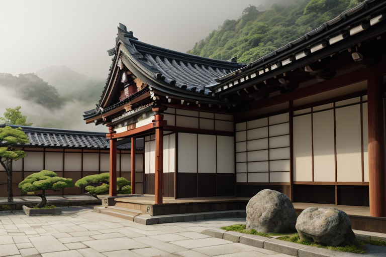

第一章 現実の愛媛
あなたはまだ気づいていない。この土地にも、王がいることを。
道後温泉本館の振鷺閣の影が、朝もやの中に静かに佇んでいる。湯けむりが立ち昇り、百年を超える木造建築の梁をやわらかく包む。湯に浸かる人々の声は、ひそやかなざわめきとなり、石畳に吸い込まれていく。ここは、現実の愛媛だ。四国山地が作り出す地殻の歪みは、絶え間なくこの土地の下を流れている。時折、微かな軋みが走る。それは、大きな災害の前触れかもしれないし、ただの日常の揺らぎかもしれない。
その歪みを、誰かが調整している。神社仏閣の静寂の中、松山城の石垣の陰で、下灘駅の水平線を前にした時、ふと感じる深い静けさ。それは、偶然の産物ではない。言葉を愛する王が、言霊の波を鎮め、この地の「静律」を保っているのだ。彼は災害を消せない。ただ、ほんの少し、現実の重さを和らげるだけだ。
問いは、常にそこにある。歪みを前にして、言葉は救いになるか。
第二章 歪みの兆候
道後温泉本館の振鷺閣から、朝の挨拶の太鼓が響く。その音は、いつもより僅かに早く、僅かに乱れていた。湯の町を包む靄の中に、目に見えない亀裂が走る。それは物理的な地震の前触れではない。人々の心に生じる、祈りのエネルギーの揺らぎだ。
内子の町並みを歩く観光客の笑い声の底に、ふと不安が混じる。しまなみ海道を渡る自転車の車輪が、理由もなく重く感じられる瞬間。妖精リリシアは、言霊の波を読み取る。「また、あの『問い』が強まっています」。彼女の声は、いつになく張り詰めていた。
王、エヒメリア・リリックは、松山城天守の静寂の中に立つ。眼下に広がる町並みから、無数の微かな「言葉」が立ち上る。願い、嘆き、些細な喜び。それらが絡み合い、時に共振し、時に打ち消し合う。その複雑な調和が、今、微妙に乱れ始めている。彼は感情を持たないはずだった。しかし、この地の濃密な感情の海に浸かるうちに、一つの「感覚」が芽生えていた。それは、乱れる調和を前にした、静かな焦りに似たものだ。
彼は手を伸ばす。指先から、柑橘の花のような微かな光が拡がり、乱れた言霊の波紋をなぞる。消すことはできない。ただ、ほんの一瞬、その響きを遅らせ、別の響きと出会うきっかけを作るだけだ。
第三章 王の葛藤
松山城の石垣に寄りかかり、エヒメリアは空を見上げた。星の配列は完璧だった。歪みの微調整は、今日も滞りなく行われている。彼の手から放たれる橙の光は、地中に潜む歪みの波を、ごくわずかに、しかし確実に和らげていた。技術的には、何も問題はない。
問題は、彼自身の内側にあった。
「言葉は救いになるか」
この問いが、彼の静かな心に、石を投げ込んだように波紋を広げる。正岡子規が病床で短冊に記した切実な一句。夏目漱石が「坊っちゃん」に込めた、救い難い人間の情熱。彼はそれらを「調整」の対象として分析してきた。感情を持たぬ者にとって、言葉はデータでしかない。
だが、今、彼は知ってしまった。データではない何かを。内子の町並みを流れる時間の重み。下灘駅で海を待つ沈黙の密度。それらは、言葉以前の、圧倒的な「意味」だった。彼はその意味を前に、自らが発する「調整」の言葉の無力さを、初めて感じた。救うのではない。ただ、寄り添うことすら、この無感情な存在に許されるのか。沈黙が、彼自身に問いかける。
第四章 妖精との対話
道後温泉の本館、振鷺閣の下。湯けむりが夜の帳を薄く染める中、詩王は主席妖精リリシアの傍らに立っていた。湯の音、木の軋み、遠くの笑い声。すべてが言葉以前の調べだった。
「王よ」リリシアの声は湯気のように柔らかい。「あなたは今、言葉の『以前』を見ています。でも、言葉は『以後』のためにあるのです」
彼女は手に持つ言霊波調整器を示した。微かに光るその器には、松山城から下灘まで、人々の無意識の呟きが集められていた。不安の波、小さな願い、記憶の断片。
「これらは、救いを求める声ではありません。ただ、『ここにいる』という証です。私たちの調整は、この証を消すことなく、その響きが魂を揺さぶりすぎないように整えること。津波を数秒遅らせるように、悲しみの衝撃をほんの少し和らげる。それが、この土地が私たちに求める『祈り』の形です」
詩王は黙って聞いた。救うのではない。ただ、その「ここにいる」という証が、一人で耐えきれないほどの重さにならないように。言葉は救わない。だが、言葉が紡がれるその「間」が、魂の足場を、ほんの少しだけ固めるかもしれない。
第五章 微調整と余韻
下灘駅のホームに、夕陽が水平線へ沈みきる一瞬前の光が差し込んだ。詩王は、駅のベンチに腰を下ろした一人の老婦人の傍らに、見えない椅子を置いた。彼女は手帳を開き、鉛筆を走らせている。亡き夫への手紙だった。言葉は届かない。だが、ペン先が紙を撫でる微かな音、海風がページをめくろうとする気配、そのすべてが、彼女の内側で渦巻く無言の悲鳴を、少しずつ形のある「嘆き」へと整えていた。
詩王は指を静かに動かす。妖精リリシアが紡ぐ言霊の波は、老婦人の内なる言葉の断片を優しく包み、鋭い刃のように自分を傷つけない、穏やかな輪郭へと整えていく。救済ではない。ただ、言葉が生まれるその「間」そのものが、耐えられる重さの器へと変わっていくのを、王は見守る。
海がすべてを飲み込む闇に変わるとき、老婦人は手帳を閉じ、深く息を吸った。そこには答えも救いもない。ただ、書き終えたという事実だけが、次の朝を迎えるための、かすかな足場となっていた。
言葉は救わない。だが、言葉が紡がれるその過程が、魂の傾きを微調整する。愛媛の静かな夜は、無数のそうした微かな調整の音で満ちている。
あなたの町にも、王がいる。